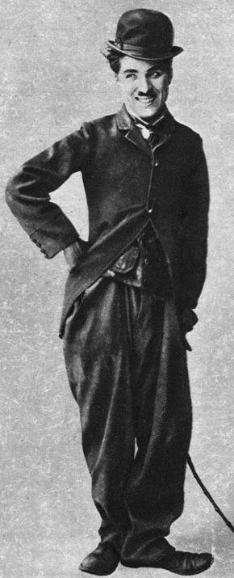
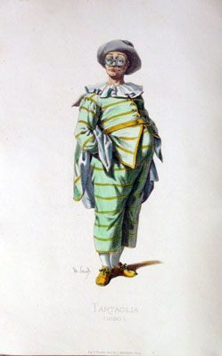
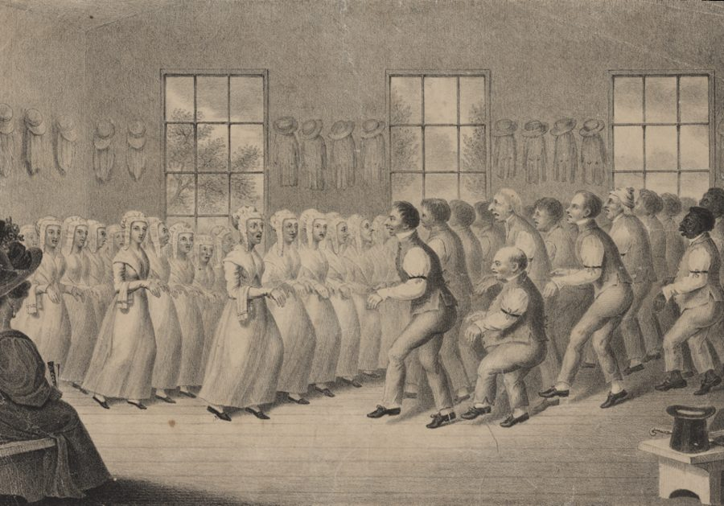

Masks with a capital M
… talks and writes of Masks with a capital …
译本：「之所以我们的面具（Mask）用大写的“M”」
大写的面具：戴上以后「住进来」的那个生物
英文里专有名词才大写，作者给 Mask 大写，等于把它当成一个人。全书从这里起都这样写，小写 mask 才是道具。中文没有大小写，这层意思只能靠记住。
全书最长的一篇从这里开始。作者先不讲面具课怎么上，而是讲面具为什么值得当真：他的老板 George Devine 戴上面具变成「蟾蜍神」的那一堂课，卓别林穿上流浪汉那身行头，斯坦尼斯拉夫斯基笔下的学生把脸涂花，瓦赫坦戈夫的两个丑角抢一块蛋糕，一位白人记者把皮肤染黑后照镜子。读的时候抓两条线：作者为什么坚持写大写的 Mask，以及他凭什么说面具「并不比别的表演更怪」。
上一篇「叙事技巧」的结尾，作者说教即兴得先「骗」学生相信想象不归他们负责，等他们够强了再把责任交还。这一篇把「不用负责」推到最远：戴上一张脸，让另一个「东西」来演。这一页的四节是开场，讲面具的来历、同行的先例、我们对脸有多敏感；出神是怎么回事在下一页，面具课怎么上在再下一页。四节都标「有空」，篇幅一半是别人的长引文。
作者说面具演员像被一个灵附身，紧接着自己补了一句「也许是胡说」：他描述的是戴面具的感受，不是说真有神灵。§3 那些部落和寺院的面具故事，他没给出处，当传闻读。
戴上一张假脸、换一身行头，人为什么会觉得自己变成了另一个人？
读的时候带着这几个问题。不用先找答案，读完回来对照「检查一下理解」。
§1 从一堂亲历的面具课开始（蟾蜍神），接着是作者和 Devine 多年的分歧，结尾插进卓别林的自述，因为 Devine 把流浪汉也算作面具。§2 换成书证：斯坦尼斯拉夫斯基书里的学生给自己乱涂油彩，瓦赫坦戈夫排练里的一场马戏团试镜，最后作者用一段话收成自己的说法。§3 口气突然变了，从「面具其实不怪」出发，转到世界各地面具的威力，再转到西方教会和教育怎样压制它，像一篇小檄文。§4 回到脸：我们对脸的本能反应，一个记者扮小丑，一个记者乔装成黑人，最后一段把读者送到镜子前，交给下一页。四节里作者自己的论点，多半只在每节的开头和结尾几句。
作者落在哪：面具状态并不神秘，正统表演里早就有：一身行头、一层油彩、一张新脸，都能让人觉得被另一个东西接管。他说我们觉得面具怪，是低估了脸对我们的支配，也没意识到自己很多时候本来就在出神；而西方文化一直在把它扑灭。
这一页是原书和译本「面具与催眠」一篇的前四节。粗体是本站给的节名，下面是译本的节号和小标题、这一节在译本电子书中开头的几个字（搜它就能跳过去），再下面是英文原文的开头。每节标了档：「先读」是这本书最精彩、不读就错过的，「有空」好看但跳过不丢线。读完打个勾。
先把这一页用到、作者默认你懂的几个概念讲一遍。讲的是概念本身，作者拿它推出什么，读原书时自己看。
平常说面具，是一件道具：遮脸、装饰、化装舞会上用。作者把 Mask 的 M 大写，指的是另一样东西：戴上以后，戴的人像换成了一个「生物」，有它自己的动作、声音和想要的东西。他说这样写，是因为真觉得那个演员被一个灵占了，又马上补一句「也许是胡说」，但体验就是这样。所以读到「面具想要」「面具哭了」，主语是那个被演出来的生物，不是那块皮革。
这一篇用的多是半脸的角色面具（Character Mask，也叫喜剧面具）：只遮额头到鼻子，露出嘴和下半边脸，能说话、能吃东西。全脸的悲剧面具技法完全不同，本篇后面「悲剧面具」一节才讲。译本大小写不分，一律「面具」，要靠上下文分。
在这一页：§1 开头就用大写的 Mask，Devine 和作者都用「住进来」「附身」说它；这一篇后面几页说的面具都是这个意思。
演员塑造角色大致有两条路。由内而外：先弄懂人物想要什么、经历过什么，让内心带出动作和样子。由外而内：先找外形，一双不合脚的鞋、一副假鼻子、一种走路的姿势，让人物从身体里「长」出来。表演课上常把前一条和斯坦尼斯拉夫斯基连在一起，其实他自己的第二本教材《演员塑造角色》专讲外部的塑造，大多数演员两条路都走。
日常的例子：换上西装去面试，人会不自觉站直、说话变慢；穿着睡衣开视频会，口气都松一些。这不是这本书发明的说法，是剧场里的老经验，「面具」只是把它推到了最极端。
在这一页：§1 卓别林说穿好行头那一刻人物就诞生了；§2 的 Kostya 和 §4 的两位记者，也都是先变了外形、再变了人。
精神分析的术语，弗洛伊德最先用：人在压力、疲倦、生病时退回更早、更孩子气的心理状态，比如老大在弟弟妹妹出生后又要奶瓶、又尿床。这个词原本带着病态的意思。后来精神分析家 Ernst Kris 提出「为自我服务的退行」：艺术家创作时短暂放下成年人的控制，像孩子一样玩，再回来收拾，这是好事。
作者用的是后一种意思：自发的时候，演员像孩子一样直接「知道」该做什么，不再一样样掂量着「选」。别把它读成「幼稚」「倒退」的贬义。它也不是道家的「复归」。
在这一页：§2 节末作者说瓦赫坦戈夫逼出来的轻度出神是退行的；后面讲面具课时，他会说新面具像个什么都不懂的婴儿。
还有两个词这一页会碰到，留给下一页讲：出神（trance，译本：「催眠」，作者说的范围比催眠宽得多）和人格（作者说它像真实心灵的公关部）。
作者在课上用过、照着就能玩的；个别几张是本站照书里的段落改的，卡里写明了来历。几个人、怎么玩、看什么写在卡片上；「先猜」那一栏是书里的课堂上发生了什么，先自己猜，或者先玩一次，再点开。全书的游戏卡汇总在游戏汇总。这一页的三张都不是作者的课堂游戏：§1–§4 里没有，是本站从卓别林的自述、瓦赫坦戈夫的一次排练和作者对学生的一句观察改出来的。
没有。他自述事先对这个人物毫无概念，只想让一切都矛盾，又加了撇小胡子显老。一穿好，衣服和化妆就让他感觉到这是个什么样的人，走上台时人物已经「完全诞生」，噱头一个接一个往外冒。Devine 因此把流浪汉也算作一种面具。作者在注里承认，这件事还有别的说法。
这是换装游戏，不是面具课：镜子只照一眼，用来看行头。作者那种戴着面具对镜、等另一个东西接管的练习，他说学生要觉得有地位高的老师护着才敢放开（§14）；本站提醒：要有经验的老师带，别一个人对着镜子做。
先是假体操、假滑冰、假杂耍，赢来热烈的掌声，瓦赫坦戈夫却说他们连门都没摸到。越演越糟，他干脆走了。这时两个人突然「成了」面具：一个吃蛋糕，只许饿着的那个捡手心的碎屑；被逗急了，饿的那个一口抢走大半块。作者的解释：被逼着自发行动，人会进入轻度出神，觉得像有别的东西在控制自己。
书里的学生演的是意大利即兴喜剧的面具角色。这张卡不戴面具，只练「来不及想」；有人真慌了想停，就停。
作者说变了：上完第一堂面具课，学生会被街上的路人惊住，突然看见「邪恶」的人、「无辜」的人，看见有人把脸定在痛苦、悲伤或骄傲的面具里。作者说孩子眼里脸就是那个人，大人丢了这种眼光，面具课又把它找回来。他还说，年轻人的脸上也看得出一个决定，比如显得笨，好处是老师对你期望低。
看脸下判断又快又一致，但多半不准（见「今天怎么看」）。这个练习练的是看，起的名字别当真，更别拿去给真人贴标签。
按在书里出现的顺序排，标题前是节号。只讲到读懂这一页需要的程度。
1958 年 Devine 给剧院的编剧小组上了一堂面具课，用的是老维克戏剧学校留下的一箱旧面具，作者就坐在下面。这一节写他们俩后来的分歧：Devine 教得随和，想练出能拿到戏里去用的角色；作者要的是附身。Devine 晚年病重时，作者去看他，他几乎最后一句话还是不认同作者那种面具课。§1 提到 Devine 导的《李尔王》由雕塑家野口勇设计，那是 1955 年 John Gielgud 主演的一版，风格很东方，作者拿它说明 Devine 的面具观偏东方戏剧。
Jacques Copeau（1879–1949）是法国导演，在自己剧院附设的学校里让学生戴面具练身体；他的外甥 Michel Saint-Denis（1897–1971）把这一套带到英国，1936 年和 Devine 等人办了伦敦戏剧工作室，二战后又一起办老维克戏剧学校。Devine 讲究原样传下去，看到作者把角色面具和悲剧面具混着用，大为吃惊。

作者引的前三段出自卓别林 1964 年的自传：Sennett 要他弄个滑稽扮相，他去服装间的路上想好了要一身「矛盾」，穿上以后人物自己就来了。第四段引自一本讲他早期喜剧的书。作者在注 1 里老实交代，人物怎么来的还有别的说法，他也见过早期电影里没留胡子的「查理」。

Kostya 不是真人：斯坦尼斯拉夫斯基的教材写成一个学生的上课日记，Kostya 是那个虚构的学生，导演 Tortsov 是老师。作者引的出自第二本《演员塑造角色》（英译本 1949 年）。瓦赫坦戈夫那段出自他的学生 Gorchakov 的回忆录；里面潘塔隆内是「阿尔通国王宫廷的博学秘书」，这是《图兰朵》里的人物，看来是那次排练。意大利即兴喜剧（Commedia dell’arte）是十六到十八世纪的职业剧团，演员戴着固定角色的面具，照着提纲即兴。Tartaglia 的名字在意大利语里就是「结巴」，所以他在排练里冒出结巴，正合这个角色的老传统。

Shakers 的正式名称是「基督再现信徒联合会」，十八世纪从英国一群「会抖的贵格派」分出来，礼拜时又抖又跳，所以得了这个外号；Quakers（贵格会）的外号，据说来自创始人 George Fox 叫人「在主的话面前颤抖」。作者拿两个名字开玩笑。他说美军烧过海地的伏都教神庙，美国在 1915–1934 年占领过海地。伏都教是非洲西部的信仰和天主教糅在一起形成的宗教。这一节中间那些面具故事（外人看一眼就处死、碰了会得麻风、藏地寺院锁门守夜），作者都没给出处。
那本书写的是他亲身遭受的歧视，当年影响很大。作者只引了一刻：变装完成后他第一次照镜子，看见一个陌生人，觉得自己分成了两个人。作者拿它和化了妆就像被附身的记者 Bill Richardson 放在一起，说明改一张脸能改多少东西。
注 3 很长。Wilhelm Reich（1897–1957）是奥地利精神分析家，弗洛伊德的学生，后来另立门户，晚年的「奥根能」理论被视为伪科学，他 1957 年死在美国的监狱里。他早年提出「性格盔甲」：人为了抵御焦虑，把一套肌肉紧张固定下来，表情也跟着僵住。作者借它说，那些紧绷的戏剧学生能接收、传递的情感范围很窄，还举了一串「换了外表就换了人」的例子。
读译本时值得翻一下原文的地方：双关、行话、口语，和译本传不出的语气。灰色斜体是原文里的一小段，在英文电子书里搜它就能找到；方框里是译本这一句的译法。译错的放在下一节「译本勘误」。
对着译本读这四节时，下面这些地方会把人读歪。方框里是译本的原句，在译本电子书里搜它就能找到；灰色斜体是英文原文那一处。只收意思错了、反了、漏了的，措辞上的出入不收。全书的勘误汇总在译本勘误。
… reminded me of surgical prostheses …
译本：「它们让我想起了外科医生的专业论文」
prostheses 是假体、假肢。作者第一眼看那箱积满灰的旧面具，觉得像医院里装的假肢，透着点让人不舒服的意思，所以紧接着说他已经觉得受到威胁。
… lasted, it was timeless …
译本：「似乎永无止境」
原文：不知道那场戏演了多久，它是没有时间的。说的是看的人忘了时间，不是嫌它长。下一页作者说，出神最常见的痕迹就是时间跳跃，这里是第一处伏笔。
… who laughed and laughed as if …
译本：「玛雅神话中的蟾蜍形地母神」
这是译注。原文给「蟾蜍神」加了引号，只是作者对 Devine 演出来的那个形象的描述：一个狂笑不止、好像觉得屋里人又可笑又可鄙的东西。原文没有玛雅的意思，不必顺着注去查。
… the student was to be pushed …
译本：「这个学生就会根据他的任何冲动而行事」
原文是 Gaskill 定的规矩：照镜子的时间要短，学生要被推着去照脑子里冒出来的第一个冲动行动。译本像是学生自然会这样，丢了「推」这个关键动作；后文 Devine 承认他们的学生通常更好，作者猜原因就在这一推。
… they reported him as saying that …
译本：「并跟他反馈这确实行得通时，他还是不喜欢」
原文：学生给 Devine 演了一场混用两种面具的戏，回来转述说 Devine 承认这样确实行得通，只是他还是不喜欢。译本成了学生向他报告「行得通」，Devine 的让步没了。「复杂场景」原文是混用角色面具和悲剧面具的戏。
… the character had come from the clothes …
译本：「因为这个角色取决于服装和化妆」
come from 是「出自、从……里来」：人物是从服装和化妆里生出来的，所以 Devine 才把它算作面具。「取决于」读起来像是角色好坏要看服装，意思偏了。
… thought that Mask work was completely unlike …
译本：「起初，我认为面具作品完全不同于」
Mask work 指戴面具的表演和训练。这一篇里它有时作「面具作品」，有时作「面具创作」（Devine 临终那句也是），读起来像在说做出来的面具或艺术品。读到时一律换成「面具表演」「面具课」。
… succeeded in getting warm applause …
译本：「最后终于得到了旁观者礼节性的掌声」
warm 是热烈。正因为观众真鼓掌了，瓦赫坦戈夫接着泼冷水才有分量：观众爱看几个节目，不等于你们找到了面具。
… of the Masks merely by doing …
译本：「就能抓住面具的‘一粟’吗」
grain 是斯坦尼斯拉夫斯基和瓦赫坦戈夫的行话，俄语原词是「种子、颗粒」，指一个角色最根本的那颗核。瓦赫坦戈夫是问：做几个体操，就以为抓住面具的核了？
… The state is regressive, but …
译本：「此状态是“复归于无物”」
regressive 是心理学的「退行」（见上面的概念块）：像退回到孩子的状态，不是道家式的「复归于无物」。后面作者说新面具像个什么都不懂的婴儿，接的就是这一条线。
… they experience no self-consciousness …
译本：「没有了之前的自我意识」
self-consciousness 在英语口语里多指不自在、怕人看、难为情。原文是说：这种状态虽然退行了，演员却一点不拘束。译本像是人失去了对自己的觉察，意思重了，也丢了前面那个「但是」。
… of trance, i.e. absorbed …
译本：「也就是说，被“掌控”了」
absorbed 是沉浸、入神，像读小说读到忘了时间。这是作者给出神下的日常定义：不是被谁控制，而是全神贯注到顾不上自己。译本把意思拧到了被人操纵那一边。
… is comparatively rare, it’s like …
译本：「我们所认为的“正常意识”极其罕见」
comparatively 是「相对地」。作者说正常意识比我们以为的少，口气留了余地，没有说它「极其」罕见。
… top of a vibrating, swishing haystack …
译本：「放在窸窣作响的干草堆顶」
原文的意思：陈列柜里那张面具，本来可能是装在一整身会抖动、沙沙响的草编服装顶上的，人一跳，整堆草都在动。译本像是把面具当装饰摆在干草堆上。作者要说的是：离开服装和舞蹈，面具只剩好不好看。
… In its original culture nothing …
译本：「在其原始文化中」
original 是「它原本所在的」那个文化。中文「原始文化」带着落后、未开化的意思，原文这一句没有这层评价。
… we feel we know all about …
译本：「我们仅从外表就能判断这是白雪公主还是女巫」
原文：嘴上说人管不了自己的长相，心里却觉得光看样子，就对白雪公主和巫婆、劳莱和哈代是什么样的人了如指掌。说的是以貌取人，不是能分辨出谁是谁。
… Why should anyone wish to look …
译本：「为什么每个人都希望自己看起来很愚蠢」
anyone 在这里是「怎么会有人」：作者自问，为什么竟有人想显得笨，自答是这样老师对你期望低。译本成了「每个人都希望」，像在说人人想显得笨。
… Masks produce changes in the personality …
译本：「因此，戴着面具会改变性格」
这个 personality 和 §3 说面具「把人格赶出身体」是同一个词，下一页作者还要专门讲它。读成「性格」，像是戴面具会让人脾气变了；其实说的是平时维持着的那个「我」被换掉。
… independent of the individual parts …
译本：「我们必须通过各个独立的部分」
注 3 引的赖希原话：整张脸的表情，要撇开一个个局部、当成整体去看。译本成了「通过各个部分」去看整体，正好反了。赖希要看的是整张脸端着的那副样子，不是哪个五官。
A Mask is a device for driving the personality out of the body and allowing a spirit to take possession of it.— §3。本站译：面具是一种装置，把人格赶出身体，让一个灵来占据它。
口气像一本操作手册：device 是「装置、工具」，作者把最玄的一件事说得像在讲一台机器怎么用。关键是前半句「把人格赶出去」，下一页整套出神理论都从「人格」讲起。spirit 他在 §1 已经用「也许是胡说」打过折扣，读的时候理解成「另一个人物」也说得通。
The Mask dies when it is entirely subjected to the will of the performer.— §3。本站译：面具一旦完全听命于演员的意志，它就死了。
一句宣判，收住整个 §3。限定词是 entirely（完全）：作者不是说演员一点不能管，而是说全由演员摆布的面具就没有生命了。译本：「当面具完全服从表演者的意志时，它就死了」意思不错。容易被读成「演员要放弃一切控制」；上一篇末尾作者说过，学生最终要学会放手的同时又在掌控。
读完这一页的四节再看。下面是作者在这四节里的主张，由本站按主张重新组织，不按原书的顺序；每条后面是节号，拿不准就回书里那一节再读一遍。
演员当然可以随便戴着面具假装成别人，但作者说他和 Gaskill 很清楚，自己是要引人进入出神。他写大写的 Mask，因为真觉得演员被一个灵占了，又补一句「也许是胡说」。Devine 教得温和，想练出不戴面具也能演的角色；作者说他不在乎来的是什么，只要附身。
§1卓别林穿好行头，人物就诞生了；斯坦尼斯拉夫斯基书里的学生涂花了脸，身体自己动起来，觉得分成了演员和观察者两个人；瓦赫坦戈夫逼学生当场行动，两个丑角突然活了。作者的结论：逼人自发，会产生轻度出神，人觉得像别的东西在控制，是「知道」而不是「选择」做什么。
§2演员会为角色脸红，感冒会在演出时停住，许多演员要化好妆、戴上假发才找到角色。作者说我们觉得面具怪，一是不知道自己对脸的反应有多不讲理，二是没意识到生活很大一部分在某种出神、也就是沉浸里度过，所谓正常意识相对少见。
§3他认为我们对脸有本能反应，嘴上说人管不了长相，心里却以貌取人；人学会端着一副表情来维持人格，年轻人脸上也看得出一个「决定」。所以化个妆、乔装一下就能让人像变了个人，第一次在镜子里看见戴面具的自己会那么不安。
§4他说教会视面具为异教，西方文化又通常敌视出神、不信任自发，想用理性代替它；教育本身「也许」主要就是反出神的。面具在这里总是一燃起就被扑灭：一有传统，学生就去学「正确」的动作，被演员摆布的面具就死了。他举的是各地的面具传闻和海地的例子，没给出处。
§3合起来：作者要读者先放下「面具是道具」的看法：一张新脸、一身行头就能换掉一个人，这在剧场里不稀奇，只是我们平时不这么说。下一页他要讲背后的机制：出神和人格。
这本书 1979 年出版。下面挑出这一页里能被后来的研究检验的说法，分「书里 / 当时 / 今天」三栏，并给一个结论。结论判的是标题里「书里的说法：」后面那一句。全书的这一节汇总在今天怎么看。
读完作者的主张，再看它站不站得住。每一块摆出三样：主流怎么看，作者怎么看，本站的评论。最后一句是本站对这一页的总体判断。
主流看法：心理学不认为面具里有灵。和它最接近的研究是「去个体化」：人一旦匿名、藏进人群或制服里，行为会变。1998 年一篇汇总几十项研究的元分析发现，人并不是变得无法无天，而是更听从眼下那个场合的规矩。面具让人放开，更像是换了一套「这不算我」的规则。
作者的看法：真正的面具演员像被一个灵占了，也许是胡说，但体验就是如此；面具是赶走人格、让灵进来的装置。§1、§3
本站的评论：作者其实很清醒：他描述的是戴面具的人的感受，并用「也许是胡说」给自己留了退路。读这一篇，把「灵」「附身」当剧场行话：另一个人物接管了你的动作和声音。下一页他会用「人格」和「不用负责」去解释它，方向和今天对匿名、角色的研究是接得上的。不要读完以为面具真能请来神灵。
主流看法：斯坦尼斯拉夫斯基的教材写成虚构学生 Kostya 的上课日记，是教学用的半小说；Gorchakov 的书是学生多年后的回忆。表演理论里，演员一边入戏、一边看着自己的「双重意识」，从狄德罗的《演员的悖论》起就争了两百多年。
作者的看法：他起初以为面具和斯坦尼体系完全不同，后来发现不是；瓦赫坦戈夫逼学生自发，就产生了轻度出神。§2
本站的评论：两段材料说明，「被角色接管」的体验在正统剧场里早有人写过，这一点立得住。但 Kostya 的狂喜是斯坦尼想让读者看到的样子，不是观察记录；§2 末尾那段结论作者说得很平，没加「我认为」，撑着它的却是一段小说和一段回忆。还有一处值得留意：Kostya 说自己分成了演员和观察者，那个观察者一直在，这和「全然被附身」并不一样。
主流看法：人类学家 Erika Bourguignon 1960 年代对 488 个社会做的跨文化调查发现，约九成有制度化的出神或附身：在这些传统社会里出神几乎是常态，作者觉得西方不寻常，有这层背景。但西方并没有停止「抖」：二十世纪兴起的五旬节派和灵恩派，礼拜时说方言、倒地都很常见，皮尤中心 2011 年估计两派约占全球基督徒的 27%。
作者的看法：教会和西方教育一直在压制面具和出神，教育本身也许主要是反出神的；面具一燃起就被扑灭。§3
本站的评论：他抓到一个真问题：学校和职场奖励讲道理，很少给人忘我的空间。但「震颤派不抖了」是个漂亮的段子，不是证据：震颤派礼拜时的抖和跳确实在十九世纪慢慢少了，可那时成员在老去、教派自己的规矩也在变，守独身又让人越来越少，不一定是「理性」压下了出神。部落面具的传闻没有出处，「原本的文化里没有比面具更有力量的东西」也带着把别的文化浪漫化的味道。这一节当檄文读，好看，别当人类学。
本站的总体看法：这一页值得带走两件事：一身行头、一张新脸能实实在在地改变一个人怎么动、怎么想；我们对脸的反应又快又不讲理，而且我们自己不知道。「被灵附身」当描述体验的行话读，西方扑灭出神那一段当作者的檄文读。
先在心里答，再点开。答错的那题，回书里把对应那一节再读一遍。
他认为课失败了，而且是他的错：没有一个面具被「住进去」，也就是没人被附身。作者试着告诉他大家有多惊讶，他坚持那堂课很差。
他们把学生猛地推进练习里，Devine 温和得多。Devine 的很多学生求稳，戴着面具也只演自己惯常的那一路，没有被附身。
演牙医和病人。演病人塔尔塔利亚的学生慌了，出了戏，说不想演；演潘塔隆内的那位留在角色里，一本正经地说拒绝治疗正是生病的征兆，牙还得从耳朵、鼻孔里拔。
选择是先想出几个办法再挑一个；知道是不经掂量，下一步自己就冒出来，像有别的东西在控制。作者说这种状态是退行的，但人并不拘谨。
正常意识。我们一检查自己是不是清醒，就发现自己「在」，像打开冰箱门灯总亮着；没检查的时候是什么样，并不知道。作者用它说明我们很多时候其实沉浸在某件事里，正常意识比以为的少。
这样老师对你的期望就低。
作者认为外表，尤其是脸，在固定一个人的人格；改了外形，人也会跟着变。记者化了小丑妆就能在马戏场里翻跟头，是同一个道理，只是程度不同。
用一句话说这一页：
想一想：你有没有一身「穿上就像换了个人」的衣服，比如工作服、球衣、婚礼上的礼服？穿上它的时候，哪些话你说得出口、平时说不出？你平常在人前端着的，又是哪一张脸？
读过又忘了，从这里想起来。挑的是这一页最值得记住的故事、游戏和说法，不按原书顺序；每条后面是节号，想细看就回书里那一节。全书各页的这一节都收在全书回顾。
一句话：面具不是道具，是一张能把人换掉的脸；作者说，这并不比演员为角色脸红更怪。
Devine 戴上面具照了一眼镜子，转过身来的是一个狂笑的「蟾蜍神」，好像屋里的人又可笑又可鄙。作者说不知道持续了多久，感觉不到时间。
§1Devine 要练能拿去演戏的角色，作者要真被附身，两人争了多年。作者最后一次去看病中的他，Devine 几乎最后一句话是：我还是觉得那种面具课不对。
§1瓦赫坦戈夫走开后，两个学生突然「成了」面具：塔尔塔利亚吃蛋糕，只许潘塔隆内捡手心的碎屑，还给他讲劳动的道理；被逗急了的潘塔隆内一口吞掉大半块。
§2每次开门，灯都亮着；不开门的时候呢？作者说「正常意识」也是这样，比我们以为的少见，我们很多时候是在入神。
§3年轻人的脸上也看得出一个决定：显得强硬、不服，或者笨。笨的好处是老师对你期望低。上完面具课的学生，走在街上会被路人的脸惊住。
§4